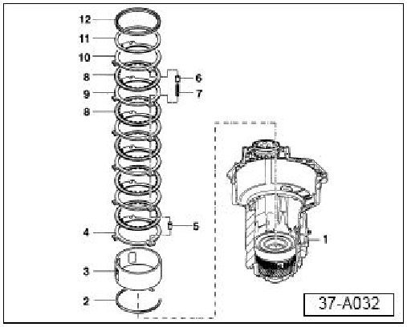
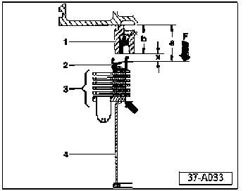
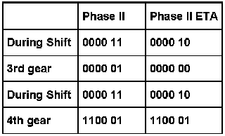

A/T - Phase II and Phase II ETA Transmission Differences
ConditionDifferences Between Phase II and Phase II ETA Transmissions

37 07 02 Jan.16, 2007, 2004387, Supersedes Technical Bulletin Group 37 number 98-03 dated May 26, 1998 due to inclusion into ElsaWeb.
Technical Background
The following information lists the major changes between Phase II Transmissions built beginning 01.95 and Phase II ETA Transmissions built beginning 01.97.
Production Solution
No production change required.
Service
B2 brake assembly:

- The Phase II B2 brake assembly wave washer has been replaced in the Phase II ETA B2 brake assembly by a round ring -12- with a "U" shaped cross section (item -2- detailed in illustration 37-A033).

- The two rings that fit into the round ring -2- touch on the outside edge and are apart on the inside edge (effect allows rings to act like a spring).
Transmission Plates
Phase II Uses 6 plates
Phase II ETA Uses 4 plates
K2 Clutch Assembly
Transmission Plates
Phase II Uses 5 plates
Phase II ETA Uses 4 plates
NOTE:
Transmission Control Module (TCM) software has been designed to compensate for the reduction of clutch plates in Phase II ETA transmissions.
Operating pressures have increased while shifting has become smoother.Phase II ETA TCM's are NOT interchangeable with earlier Phase II TCM's! There WILL BE DAMAGE to the transmission if the incorrect TCM is used.
Phase II ETA Transmission's are not compatible with Phase II TCM's.If a replacement of a transmission is necessary, ALWAYS check transmission code letters.ONLY install a transmission with the same code letters.
Valve body
The function of valve 7 in the valve body has been changed in Phase II ETA transmissions.
Transmission Valve 7 function
Phase II Changes position of the diverter valve for the B2 brake and K3 clutch.
Phase II ETA Changes position of K1 diverter valve to relieve oil pressure rapidly in the K1 during 3rd to 4th gear shift.
When using the VAG 1551/VAS 5051/VAS 5052 Scan Tool or the Shift Pattern Box (see the AG4 Automatic Transmission Operation and Diagnosis Training Course Booklet) the following will be noticed:

Warranty
Information only.
Required Parts and Tools
No Special Tools required.
No Special Parts required.Always see ETKA for the latest part(s) information.